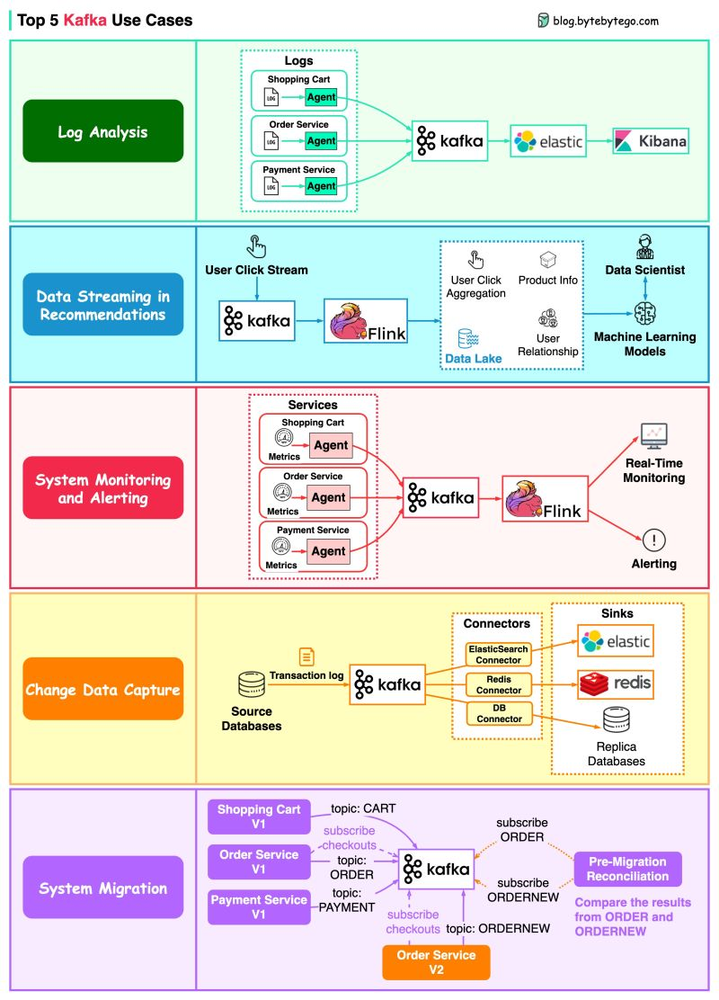

Kafka and Log-based Messaging
The distributed commit log as a primitive: how an append-only, partitioned, replicated log replaces queues, becomes the source of truth, and pins down delivery and ordering semantics.
In this lesson
- The log as a primitive
- Kafka architecture: topics, partitions, offsets
- Producers: acks, idempotence, partitioning
- Consumers, groups, and rebalancing
- Replication, ISR, and durability
- Delivery semantics and exactly-once
- Ordering guarantees
- Retention and log compaction
- Kafka vs traditional queues
- KRaft: removing ZooKeeper
- Principal-level mastery check
The log as a primitive
The single idea that makes Kafka worth understanding is that an append-only, totally-ordered log is a more fundamental abstraction than a queue. A queue couples delivery to consumption: once a consumer acks a message, it's gone. A log decouples them. The log is just a sequence of records, each assigned a monotonically increasing offset. Writes only ever append to the tail. Readers maintain their own cursor into the log and can read at whatever pace they like, replay from any offset, and any number of independent readers can consume the same log without interfering with each other.
This is the same data structure that powers the internals of databases. The write-ahead log (WAL) in Postgres, the redo log in MySQL, the commit log in Cassandra, the memtable flush sequence in an LSM tree (see Storage Engines: LSM vs B-Tree) — all are append-only logs. Replication itself is fundamentally "ship the leader's log to the followers and let them replay it" (see Replication Deep Dive). Kafka's insight was to take that internal primitive, expose it as a first-class network service, and make it horizontally scalable and durable. The log is the system.
Kafka architecture: topics, partitions, offsets
A topic is a named log. To scale beyond one machine's disk and throughput, a topic is split into partitions. Each partition is an independent ordered log living on disk as a sequence of segment files. Total ordering exists only within a partition; there is no global order across partitions. This single design choice cascades into nearly every other property of Kafka.
- Partition: the unit of parallelism, ordering, and storage. A partition has exactly one leader replica and N follower replicas at any moment.
- Offset: a 64-bit monotonically increasing integer identifying a record's position within a partition. Offsets are per-partition, never reused, and never reset on the broker side.
- Broker: a Kafka server. A cluster is a set of brokers; partitions and their replicas are spread across brokers.
- Segment: a partition is physically a series of ~1 GB segment files plus a sparse offset index and a timestamp index. Old segments are deleted or compacted as whole files, which is why retention is cheap.
The reason Kafka achieves very high throughput on commodity disks is that the access pattern is almost entirely sequential. Producers append to the tail; consumers read forward. Kafka leans on the OS page cache rather than maintaining its own, and uses zero-copy (sendfile) to move bytes from page cache straight to the socket without copying through user space. Records are batched and optionally compressed (lz4/zstd) end-to-end so the broker can store and forward compressed batches untouched.
Topic "orders", 3 partitions:
P0: [o:0][o:1][o:2][o:3] <- tail (leader on broker 1)
P1: [o:0][o:1][o:2] <- tail (leader on broker 2)
P2: [o:0][o:1][o:2][o:3][o:4] <- tail (leader on broker 3)
key("user-42") -> hash -> P1 (all events for user-42 land in P1, in order)Producers: acks, idempotence, partitioning
A producer chooses a partition per record. If a record has a key, the default partitioner does murmur2(key) % numPartitions, guaranteeing all records with the same key go to the same partition and therefore stay ordered relative to each other. Keyless records use a sticky partitioner that batches to one partition at a time to improve batching efficiency. Note that changing partition count breaks key-to-partition stability — a classic operational footgun.
The acks knob
| acks | Meaning | Durability / latency trade-off |
|---|---|---|
acks=0 | Fire and forget; producer doesn't wait. | Lowest latency, data loss on any failure. Rarely acceptable. |
acks=1 | Leader writes to its log and acks. | Loses data if leader fails before followers replicate. |
acks=all | Leader waits for all in-sync replicas to replicate. | Strongest durability; bounded by slowest ISR member. |
acks=all alone does not mean "no data loss." It means "no loss as long as one ISR member survives." If min.insync.replicas is left at 1, the ISR can shrink to just the leader and acks=all degrades to acks=1 silently. Durability is the conjunction of acks=all and min.insync.replicas>=2 and replication factor ≥ 3.The idempotent producer
Without idempotence, a producer retry after a network timeout can write the same record twice (the ack was lost, not the write). The idempotent producer (enable.idempotence=true, default since Kafka 3.0) fixes this. Each producer gets a Producer ID (PID) and tags every batch with a monotonic sequence number per partition. The broker deduplicates: if it sees a sequence number it already committed, it discards the duplicate but still returns success. This gives exactly-once append semantics for a single producer session, eliminating duplicates from retries while preserving ordering.
props.put("enable.idempotence", "true"); // implies acks=all, retries=MAX,
// max.in.flight=5 (still ordered)
props.put("acks", "all");
props.put("min.insync.replicas", "2"); // broker/topic config, not producerConsumers, groups, and rebalancing
Consumers read from partitions and track their position by committing offsets back to Kafka (stored in the internal __consumer_offsets topic). The unit of scaling and load-sharing is the consumer group: a group is identified by a group.id, and Kafka guarantees that within a group, each partition is assigned to exactly one consumer. So the maximum useful parallelism for a group equals the partition count — adding consumers beyond that leaves them idle.
Multiple groups can read the same topic independently, each with its own offsets. This is the pub/sub vs. queue duality in one mechanism: one group acting as a load-balanced queue, many groups acting as independent fan-out subscribers.
Rebalancing
When a consumer joins, leaves, or dies (misses session.timeout.ms heartbeats), the group coordinator triggers a rebalance to reassign partitions. The classic "eager" protocol is stop-the-world: every consumer revokes all partitions, then the new assignment is computed and distributed. For large groups this causes painful pauses.
- Cooperative incremental rebalancing (
CooperativeStickyAssignor) only moves the partitions that need to move, so most consumers keep processing during a rebalance. - Static group membership (
group.instance.id) lets a consumer restart withinsession.timeout.mswithout triggering a rebalance at all — essential for rolling restarts of large stateful stream apps.
poll() calls exceeding max.poll.interval.ms makes the coordinator evict the consumer mid-batch, causing duplicate processing and a rebalance storm.Replication, ISR, and durability
Each partition is replicated to replication.factor brokers. One replica is the leader; all reads and writes go through it (Kafka added follower fetching for rack-locality reads later, but the leader still owns the write path). Followers continuously fetch from the leader to stay caught up.
The in-sync replica set (ISR) is the set of replicas — including the leader — that are caught up to within replica.lag.time.max.ms of the leader's log. A record is considered committed only once all ISR members have it; consumers can never read past the high watermark (the highest committed offset). This is what makes Kafka's replication consistent: you cannot read data that isn't durably replicated to the full ISR.
| Parameter | Role |
|---|---|
replication.factor=3 | How many copies exist. |
min.insync.replicas=2 | Minimum ISR size for a write to be accepted under acks=all. Below this, producers get NotEnoughReplicas and writes fail (fail-closed, preserving consistency). |
unclean.leader.election.enable | If true, a non-ISR replica can become leader on total ISR loss — restoring availability at the cost of silently dropping committed data. Keep false for correctness. |
min.insync.replicas=2 and unclean election off, a partition becomes unavailable for writes rather than risk data loss when too many replicas fail. unclean.leader.election=true flips that to AP. Leader election among ISR members is coordinated by the controller — historically via ZooKeeper, now via the Raft-based KRaft controller quorum (see below). This is exactly Leader Election and Coordination applied per-partition at cluster scale.Delivery semantics and exactly-once
Delivery semantics are the question that most often trips engineers up. Be precise: the guarantee is end-to-end and depends on producer config, consumer commit ordering, and whether the consumer's output is itself in Kafka.
At-most-once
Commit offsets before processing, or use acks=0. A failure loses the in-flight message. Acceptable for high-volume metrics where occasional loss is fine.
At-least-once
The pragmatic default. Process the message, then commit the offset. A crash between processing and commit causes re-delivery. The consumer's side effects must therefore be idempotent — dedupe by event ID, use upserts keyed by a natural key, or use conditional writes. In the vast majority of real systems, "at-least-once delivery + idempotent consumers" is the right and sufficient design.
Exactly-once (EOS)
True exactly-once in Kafka is achievable only for the closed loop of consume → transform → produce-to-Kafka (and offset commit). It combines two mechanisms:
- The idempotent producer (dedupes producer retries).
- Transactions: a producer with a
transactional.idcan atomically write to multiple partitions and commit consumer offsets in the same transaction. A transaction coordinator writes markers to the partitions; consumers withisolation.level=read_committedskip records from aborted/in-flight transactions.
producer.initTransactions();
while (true) {
records = consumer.poll(...);
producer.beginTransaction();
for (r : records) producer.send(transform(r));
// commit input offsets *inside* the transaction
producer.sendOffsetsToTransaction(offsetsOf(records), consumerGroupMetadata);
producer.commitTransaction(); // atomic: output records + offsets
}Ordering guarantees
Kafka guarantees order per partition, nothing more. The design corollaries every principal should internalize:
- If you need ordered processing for an entity (a user, an account, an order), key all its events on that entity ID so they land in one partition. This is the same locality argument as Sharding and is often implemented with Consistent Hashing when partition counts change.
- Global ordering across a topic requires a single partition — which caps throughput at one partition's worth. Almost never the right answer; redesign so per-key ordering suffices.
max.in.flight.requests.per.connection > 1can reorder on retry unless the idempotent producer is enabled, which preserves order up to 5 in-flight batches.
Ordering is fundamentally a question of clocks and causality. Kafka sidesteps distributed-clock problems by defining order as "position in the partition's log" — a single-writer (the leader) imposes a total order locally. See Time Clocks and Ordering for why this single-writer-per-partition trick is the cheapest correct way to get ordering in a distributed system.
Retention and log compaction
Kafka retains data independent of consumption — this is the property that makes it a log and not a queue. Two retention policies:
Time/size retention (delete)
retention.ms / retention.bytes: whole segments are deleted once they age out or the partition exceeds the size cap. This is the default for event streams. With infinite retention (or tiered storage offloading old segments to S3), Kafka becomes a durable system of record you can replay from the beginning.
Log compaction
cleanup.policy=compact: instead of deleting by age, Kafka guarantees to retain at least the latest value for each key. A background cleaner rewrites segments, dropping superseded records for the same key. The result is a log that, when fully replayed, reconstructs the current state of every key — effectively a durable, replayable changelog or key-value snapshot.
delete.retention.ms so consumers see the delete before it's purged.Kafka vs traditional queues
The temptation is to treat Kafka and RabbitMQ/SQS as interchangeable "message brokers." They are not. See Queues and Designing a Distributed Message Queue for the queue model in depth.
| Dimension | Kafka (log) | RabbitMQ / SQS (queue/broker) |
|---|---|---|
| Message lifecycle | Retained for a retention window; consumption is a read, not a delete. Replayable. | Deleted on ack. No replay. |
| Consumer model | Pull; consumers track offsets. Multiple groups read the same data independently. | Push (RabbitMQ) or pull (SQS); broker tracks delivery/ack per message. |
| Ordering | Strict per-partition. | RabbitMQ per-queue (weak under redelivery); SQS FIFO per message-group, standard is best-effort. |
| Per-message routing/priority | None natively. No selective ack, no priority, no per-message TTL, no dead-letter routing without extra plumbing. | Rich: routing keys, exchanges, priorities, per-message TTL, native DLQ, selective ack/nack. |
| Throughput | Very high (millions/s); sequential I/O, batching, zero-copy. | Lower; per-message bookkeeping. |
| Best fit | Event streaming, log of record, fan-out, stream processing, CDC. | Task/job queues, RPC-style work distribution, complex routing, low-volume control messages. |
KRaft: removing ZooKeeper
For most of its life Kafka depended on ZooKeeper for cluster metadata: broker membership, topic/partition configs, the controller election, and ISR/leadership state. ZooKeeper was an operational tax (a separate cluster to run, tune, and secure) and a scalability ceiling — the controller had to load all metadata from ZK, capping practical partition counts around the low hundreds of thousands.
KRaft (KIP-500, production-ready in 3.3, ZK removed entirely in 4.0) replaces ZooKeeper with a built-in Raft consensus quorum among dedicated controller nodes. Cluster metadata is itself stored as an internal Kafka log (the __cluster_metadata topic) that the controller quorum replicates via Raft. Brokers become followers of that metadata log rather than polling ZooKeeper.
- Failover is faster: a new controller already has the metadata log in memory and replays the tail instead of reloading all state from ZK.
- Scales to millions of partitions because metadata propagation is incremental log replication, not a full snapshot load.
- One system to operate and secure instead of two; a single consensus protocol governs the whole control plane.
Principal-level mastery check
acks=all + min.insync.replicas≥2 + RF≥3 + unclean election off), not a single flag. They scope exactly-once precisely to the Kafka-to-Kafka loop and immediately bridge to the outbox/saga patterns for external side effects. They reach for at-least-once + idempotent consumers as the default and justify when EOS is worth its cost. They tie partition count to both ordering granularity and consumer parallelism, and they flag that you can't shrink partitions and that growing them breaks key locality. They know KRaft replaced ZooKeeper and why it raised the partition ceiling.- You need strict ordering for events belonging to one customer but high aggregate throughput. How do you partition, and what happens to ordering if you later double the partition count? How would you migrate without breaking key locality?
- A consumer charges a payment per message. Walk me through achieving end-to-end correctness — why Kafka transactions are insufficient here, and how the outbox pattern plus an idempotency key on the payment provider solves it. (Tie to Designing a Payment System.)
- Your team set
acks=allbut still lost data after a broker failure. Enumerate every config that could explain it (min.insync.replicas=1, unclean leader election, RF=2 with one failure). - Compare building a notification fan-out on Kafka vs SQS. Which per-message features does Kafka lack, and at what scale does the log model start winning?
- A compacted topic is being used as a key-value source of truth for bootstrapping new services. What are the failure modes — tombstone retention races, compaction lag, a consumer that bootstraps from a partially compacted segment?
- How does KRaft change failover behavior and the partition-count ceiling versus the ZooKeeper era, and what does the metadata log being Raft-replicated buy you in terms of consistency during a controller failover?
Visual references


.png)